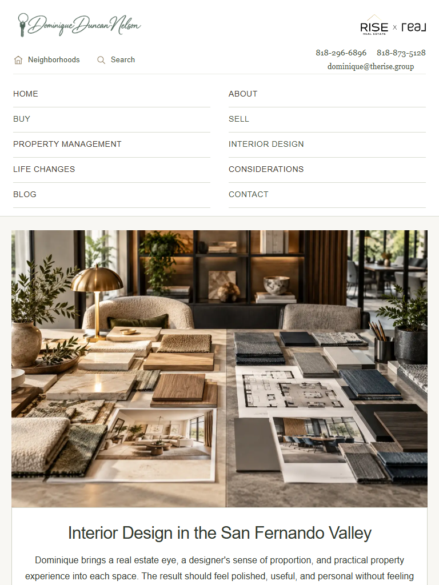
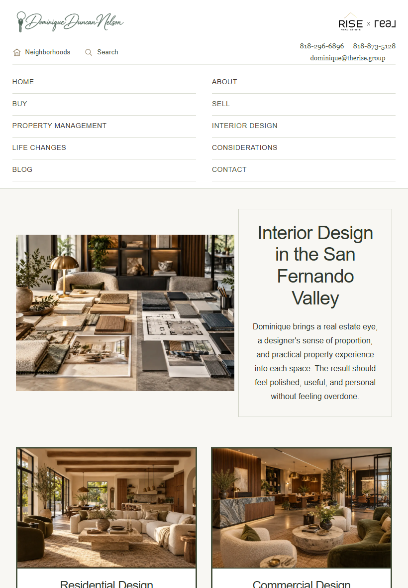
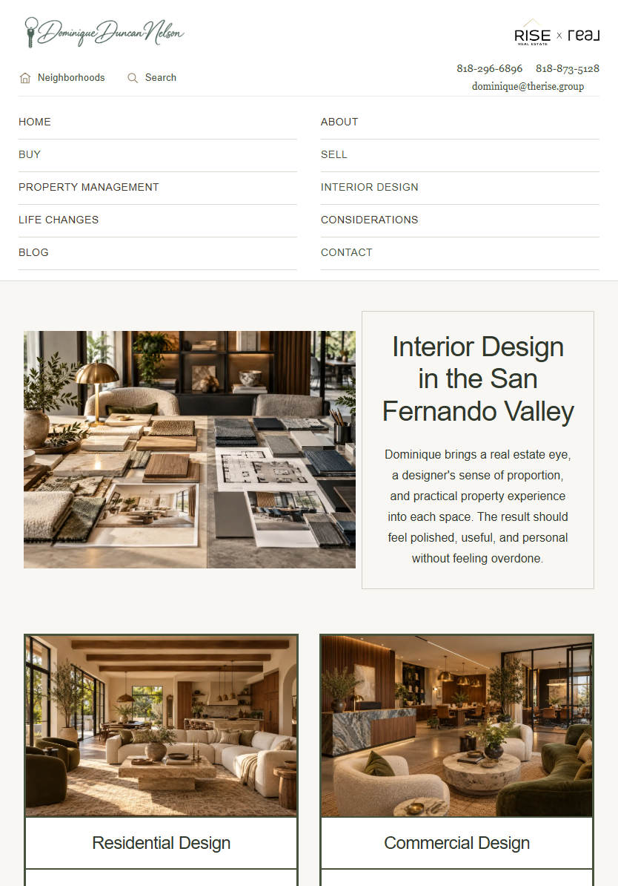
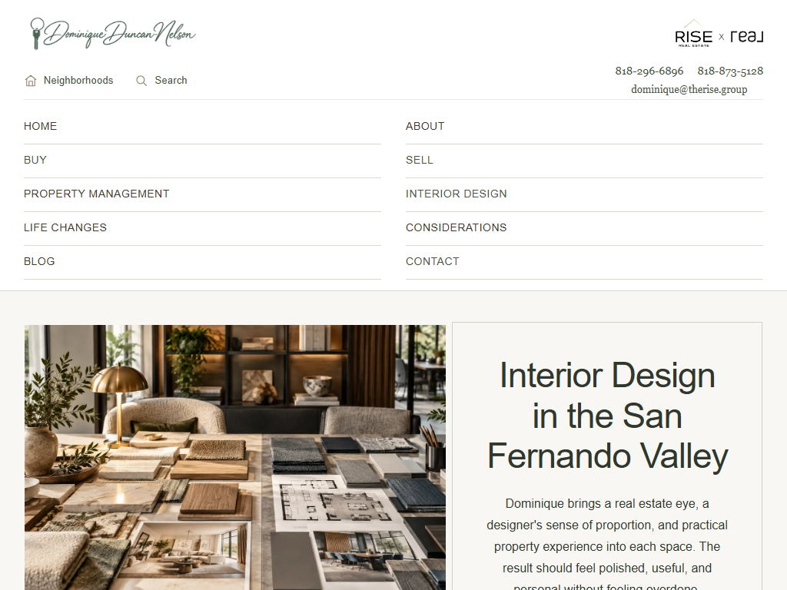
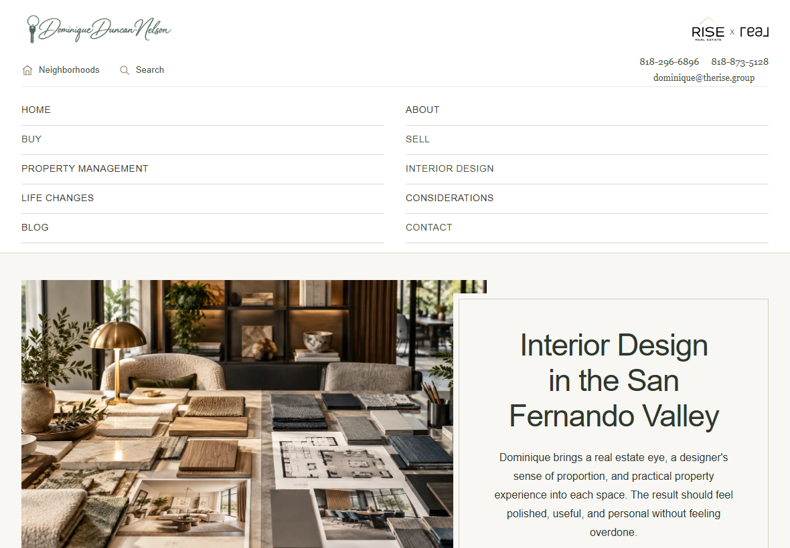

These are isolated visual proposals, not installed navigation. Desktop and phone behavior remain unchanged.
Recommended: two-column directory. All ten categories stay visible at a readable size. No horizontal scrolling, More button, or hamburger. Tradeoff: five short rows make the header taller, relaxing the single-row requirement.
Alternative: vertical side navigation. All ten categories stay visible in one vertical column. Tradeoff: it reserves 202px of screen width and requires adapting the page layout and dropdown positioning before implementation.




